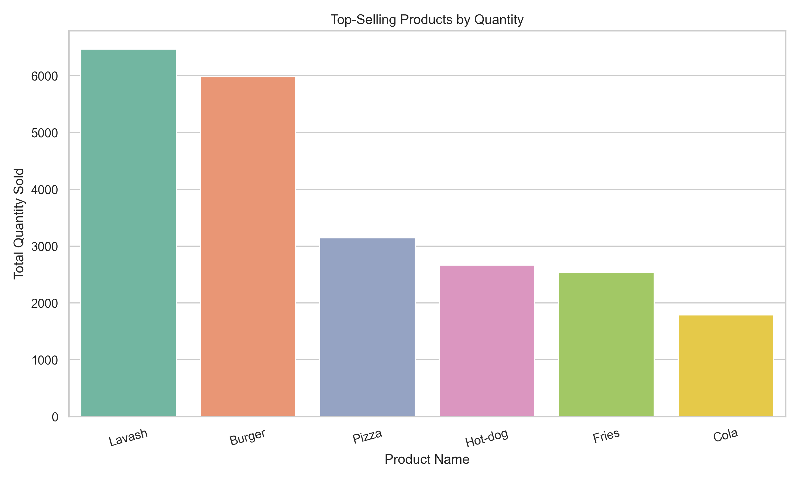
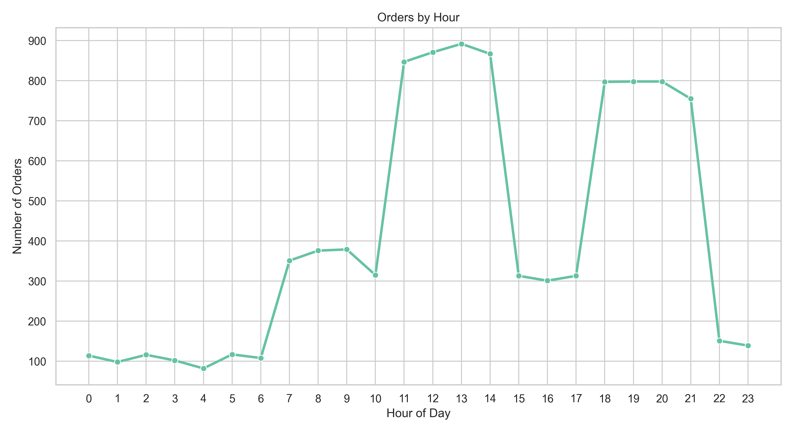
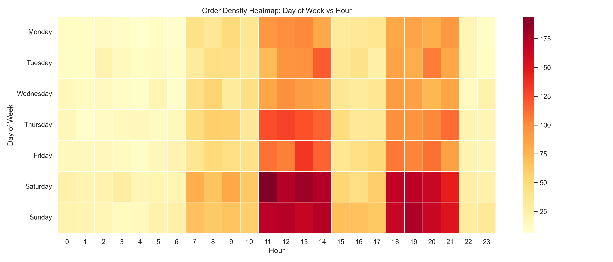
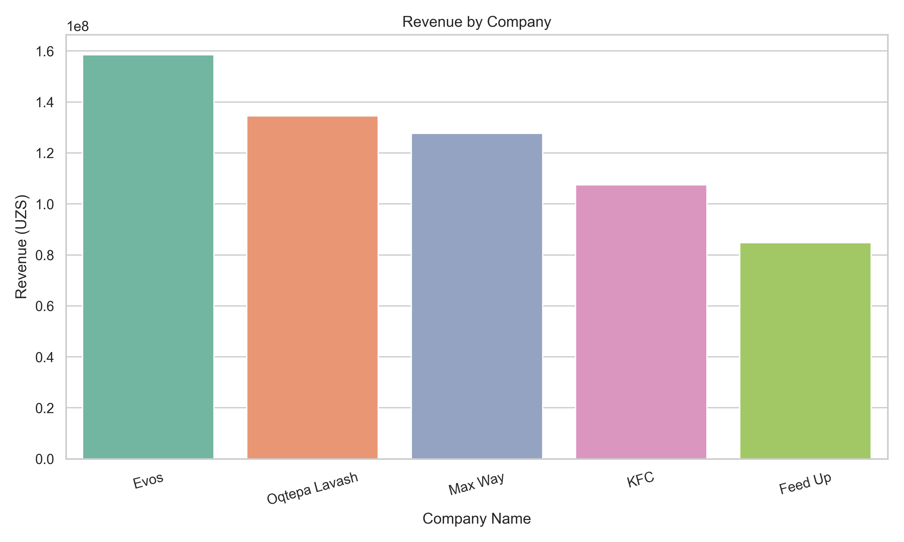

Dataset size
10,000
Synthetic fast-food orders generated for one month.
Uzbekistan | 30-day synthetic market simulation
This website summarizes the generated fast food demand dataset for leading brands in Uzbekistan: Evos, Oqtepa Lavash, Max Way, KFC, and Feed Up. It explains what the data says, what each chart shows, and which business actions stand out.
Overview
Dataset size
Synthetic fast-food orders generated for one month.
Total revenue
Combined sales from all companies and all products.
Most popular product
6,469 units sold across the dataset.
Best company
158,483,000 UZS in revenue, highest in the sample.
Peak hour
Lunch dominates overall order volume.
Weekend pressure
Average weekend orders per day versus 272 on weekdays.
Dataset details
is_weekend, time_period, and avg_order_value.Chart gallery
PNG 1
This chart compares the total quantity sold for each menu item. It shows which products drive order volume, not just revenue.

PNG 2
This line chart tracks how many orders arrive during each hour of the day, making demand peaks easy to spot.

PNG 3
This heatmap combines day-of-week and hour-of-day demand, revealing exactly when customer traffic concentrates.

PNG 4
This bar chart compares total sales value for each restaurant brand in the dataset.

Performance tables
| Product | Quantity sold | Revenue |
|---|---|---|
| Lavash | 6,469 | 194,907,500 UZS |
| Burger | 5,982 | 179,290,500 UZS |
| Pizza | 3,146 | 110,077,500 UZS |
| Hot-dog | 2,665 | 52,152,500 UZS |
| Fries | 2,540 | 46,793,500 UZS |
| Cola | 1,789 | 29,659,500 UZS |
| Company | Revenue | Avg order value |
|---|---|---|
| Evos | 158,483,000 UZS | 27,014.51 UZS |
| Oqtepa Lavash | 134,471,000 UZS | 27,104.56 UZS |
| Max Way | 127,641,500 UZS | 27,139.87 UZS |
| KFC | 107,487,000 UZS | 27,200.00 UZS |
| Feed Up | 84,798,500 UZS | 26,844.33 UZS |
Insights
These two products clearly lead both unit volume and revenue. They should be the center of menu planning, campaign design, and supply chain prioritization.
Demand is heaviest around midday, especially from 11:00 to 14:00. Fast service during that window likely matters more than late-night availability.
Weekend days average 503 orders and 30.76M UZS per day, while weekdays average 272 orders and 16.67M UZS per day. Weekend operations should therefore be more heavily staffed.
Evos is the top-performing company in this synthetic market. The next closest brands, Oqtepa Lavash and Max Way, remain competitive but lag behind in total revenue.
Files
The complete synthetic dataset used for the analysis and website summary.
Product volume comparison chart focused on demand quantity.
Hourly order trend chart showing lunch and dinner peaks.
Demand intensity map by weekday and hour for operations planning.
Revenue comparison chart for all five fast-food brands.